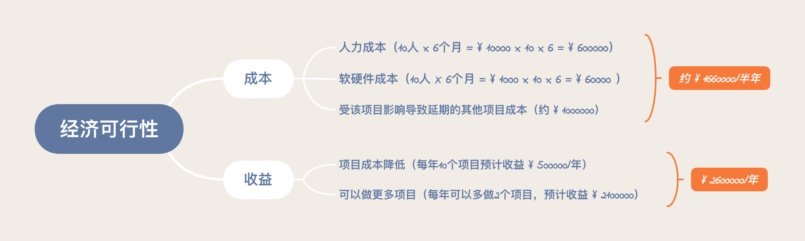
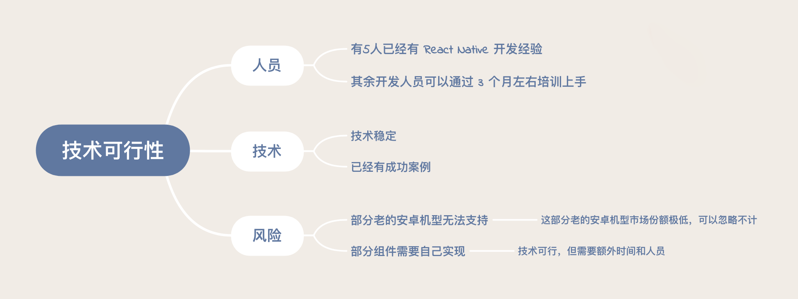
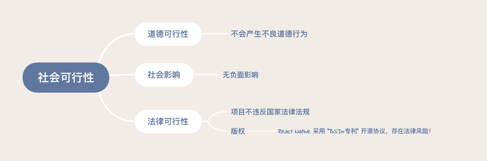

- 00 开篇词 你为什么应该学好软件工程？.md.html
- 01 到底应该怎样理解软件工程？.md.html
- 02 工程思维：把每件事都当作一个项目来推进.md.html
- 03 瀑布模型：像工厂流水线一样把软件开发分层化.md.html
- 04 瀑布模型之外，还有哪些开发模型？.md.html
- 05 敏捷开发到底是想解决什么问题？.md.html
- 06 大厂都在用哪些敏捷方法？（上）.md.html
- 07 大厂都在用哪些敏捷方法？（下）.md.html
- 08 怎样平衡软件质量与时间成本范围的关系？.md.html
- 09 为什么软件工程项目普遍不重视可行性分析？.md.html
- 10 如果你想技术转管理，先来试试管好一个项目.md.html
- 11 项目计划：代码未动，计划先行.md.html
- 12 流程和规范：红绿灯不是约束，而是用来提高效率.md.html
- 13 白天开会，加班写代码的节奏怎么破？.md.html
- 14 项目管理工具：一切管理问题，都应思考能否通过工具解决.md.html
- 15 风险管理：不能盲目乐观，凡事都应该有B计划.md.html
- 16 怎样才能写好项目文档？.md.html
- 17 需求分析到底要分析什么？怎么分析？.md.html
- 18 原型设计：如何用最小的代价完成产品特性？.md.html
- 19 作为程序员，你应该有产品意识.md.html
- 20 如何应对让人头疼的需求变更问题？.md.html
- 21 架构设计：普通程序员也能实现复杂系统？.md.html
- 22 如何为项目做好技术选型？.md.html
- 23 架构师：不想当架构师的程序员不是好程序员.md.html
- 24 技术债务：是继续修修补补凑合着用，还是推翻重来？.md.html
- 25 有哪些方法可以提高开发效率？.md.html
- 26 持续交付：如何做到随时发布新版本到生产环境？.md.html
- 27 软件工程师的核心竞争力是什么？（上）.md.html
- 28 软件工程师的核心竞争力是什么？（下）.md.html
- 29 自动化测试：如何把Bug杀死在摇篮里？.md.html
- 30 用好源代码管理工具，让你的协作更高效.md.html
- 31 软件测试要为产品质量负责吗？.md.html
- 32 软件测试：什么样的公司需要专职测试？.md.html
- 33 测试工具：为什么不应该通过QQ微信邮件报Bug？.md.html
- 34 账号密码泄露成灾，应该怎样预防？.md.html
- 35 版本发布：软件上线只是新的开始.md.html
- 36 DevOps工程师到底要做什么事情？.md.html
- 37 遇到线上故障，你和高手的差距在哪里？.md.html
- 38 日志管理：如何借助工具快速发现和定位产品问题 ？.md.html
- 39 项目总结：做好项目复盘，把经验变成能力.md.html
- 40 最佳实践：小团队如何应用软件工程？.md.html
- 41 为什么程序员的业余项目大多都死了？.md.html
- 42 反面案例：盘点那些失败的软件项目.md.html
- 43 以VS Code为例，看大型开源项目是如何应用软件工程的？.md.html
- 44 微软、谷歌、阿里巴巴等大厂是怎样应用软件工程的？.md.html
- 45 从软件工程的角度看微服务、云计算、人工智能这些新技术.md.html
- 一问一答第1期 30个软件开发常见问题解决策略.md.html
- 一问一答第2期 30个软件开发常见问题解决策略.md.html
- 一问一答第3期 18个软件开发常见问题解决策略.md.html
- 一问一答第4期 14个软件开发常见问题解决策略.md.html
- 一问一答第5期 22个软件开发常见问题解决策略.md.html
- 学习攻略 怎样学好软件工程？.md.html
- 特别放送 从软件工程的角度解读任正非的新年公开信.md.html
- 结束语 万事皆项目，软件工程无处不在.md.html
09 为什么软件工程项目普遍不重视可行性分析？
你好，我是宝玉，我今天分享的主题是：可行性研究， 一个从一开始就注定失败的跨平台项目。借此来与你一起讨论，为什么软件工程项目普遍不重视可行性分析。
如果你随手拿起本软件工程教材翻翻，第一章一般都是讲“可行性研究”的，呈现顺序仅次于“绪论”，可见其重要性。
“可行性研究”通常讲的是如何科学地论证项目的可行性，以及这个项目是不是值得做。这个知识点比较简单，落实到期末考试的题目上，一般只是一道像这样的选择题或填空题：
“可行性研究主要从哪几个方面进行？”
这个题目要回答的话也不难，记住答案即可。
对于软件项目的可行性研究，主要从以下几个方面入手：
经济可行性；
技术可行性；
社会可行性。
看上去这么简单的知识点，到底重要在哪里呢？我们先来看一个真实的案例。
2015 年的时候，Facebook 推出了一个跨平台的移动端解决方案 React Native，只要用 JavaScript 一门语言就可以将写好的代码运行于 iOS、Android 移动平台。
所以在 2016 年的时候，某著名大型互联网公司的移动部门负责人非常看好这个技术，专门成立了项目组，用了不少人力，花了大半年时间将移动端 iOS、Android 产品迁移到 React Native 技术框架上。
就在项目快要上线的时候，法务部门却发现 React Native 的开源许可协议是“BSD+ 专利”。那这个“BSD+ 专利”的许可协议是什么呢？
BSD 的许可协议本身是开放的、没有限制的，但 Facebook 在此基础增加了一个“专利”协议。也就是说，如果对 Facebook 及其子公司提出专利诉讼，不管诉讼的项目是否与该协议有关，用户的所有专利权利也都会自动终止。
也就是说，如果未来该公司因为专利问题与 Facebook 产生纠纷，那么该公司将会无条件输了官司。
而目前该公司和 Facebook 是有竞争关系的，所以法务部门为了避免未来可能的纠纷，不得不叫停这个项目。而此时，他们在这个项目上投入的大量人力财力，相当于全打水漂了。
即使后来 2018 年的时候，Facebook 把 React Native 的开源协议修改为友好的 MIT 协议，也为时晚矣。
你看，如果在立项之前，就让法务部门帮助评估一下社会可行性（具体到这里，也就是法律方面的可行性），该公司就可以避免很大一笔损失。
类似的案例其实不在少数。许多公司老板或者部门负责人不是很懂技术，天马行空想到一个点子，或者看到某个热门技术（比如说团购、共享经济、人工智能、区块链），不做可行性研究就直接立项去做，耗费了不少人力、物力和时间成本不说，最后项目也不得不以失败告终。
为什么软件项目很少做可行性研究？
可行性研究不是软件项目的专利，在很多其他工程领域，项目正式启动前，都会有可行性研究这一环节，而且一般都会请一家甚至多家专业的评估机构帮助做可行性分析，并出具可行性研究报告，然后项目方来决定是不是立项。
拿建筑工程来说，你要在某条街上盖房子，却不做可行性研究，那么如果这条街两年后要拆迁，那就意味着你的房子也会面临被拆掉的命运，那损失就大了。
为什么在软件工程领域，可行性研究就不是很灵了？如果你也经历过或者听说过一些失败的软件项目，不知道你有没有想过，为什么这些软件项目很少有做可行性研究的？如果你有机会就这个问题去做一下调查，很可能会得到下面这些答案。
- “因为我们是软件项目，所以我们很特殊。”
“我们很特殊”，这句话听着有没有很熟悉？软件项目确实有和其他工程项目不一样的地方。
比如说软件项目很抽象，以至于在立项之前对于问题的描述（需求）和解决方案（技术方案）通常都是模糊不清的，只有随着项目的推进，才能逐步搞清楚需求。
而可行性研究是基于问题和解决方案来分析的，因此这有点像“先有鸡还是先有蛋”的问题：你得先立项才能慢慢搞明白需求是什么，然后才能有解决方案；而你只有搞明白需求是什么，以及解决方案是什么，才能去做可行性研究。
但“我们很特殊”，不能成为不做可行性分析的借口，可能项目需求最开始是模糊不清的，还不具备可行性研究的条件，那么等到项目有了一定的进展，需求逐步明确后，要继续对可行性做研究。
如果发现方案不具备可行性，也应及时调整方案或停止项目以止损。
- “老板拍板的项目，明知道不可行也得硬着头皮干呀！”
这个问题要分类讨论，有两种情况。
第一种情况，多半是由于老板或者项目负责人控制决策权，且对于不同意见容忍度较低。底下人不敢提不同意见，明知道不对也只能执行。
如果你是项目执行人员，不能参与决策，但觉得项目明显不可行，我仍然建议你尽可能站在专业的角度给出科学的分析，通过合理的方式反馈意见。毕竟，项目如果失败了，你也一样可能遭受损失。
如果你就是老板或者项目负责人，则应该建立可行性研究的意识，并理性听取不同意见，科学客观地进行可行性分析，以便有效降低项目失败概率。
第二种情况，老板或者项目负责人能接触到的信息更多、更全面，同时还有战略上的一些考虑，所以下面执行的人觉得不靠谱，并不代表真的不靠谱。
举个例子，2009 年阿里巴巴决定做阿里云的时候，公司反对者占绝大多数，只有马云和王坚等少数人觉得这个项目可行，而且必须做。最后，事实证明他们是对的。
所以有时候，也不要着急下结论，可以换个角度思考下，也许是你因为条件限制还没想清楚。
- “软件项目是鼓励创新、鼓励试错的，可行性研究会阻碍创新！”
这也是一种很典型的错误观点，认为创新就可以不做可行性研究，否则会阻碍创新。实际上可行性研究和创新从来就不是矛盾的，它反而可以帮助你提前过滤掉那些不靠谱的创新想法，提前发现可能的风险。
想一想文章开头关于 React Native 开源协议冲突的案例，虽然是一个创新性的项目，却未绕过开源协议引起的法律纠纷。如果当初有法律方面的可行性研究，完全可以改用开源协议更友好的同类开源技术，避免项目的失败。
如何做好可行性研究？
前面，我们讲了可行性研究在软件工程中的重要性，也帮你厘清了几个常见的困惑，接下来我们来看看“如何做”的问题。
其实，当你决定要做可行性研究，你就已经成功一半了，怎么做反而是相对简单的部分！
软件工程的教材里面，通常会讲如何写可行性研究报告，很繁琐，要撰写诸如引言、背景、定义等内容。在这里，我们关注的重点是，软件工程中是如何去做可行性研究的。如文章开头所说的，通常从三个方面着手做：
-
**经济可行性。**从成本和收益角度分析，看投入产出比。不仅要分析短期利益，还要分析长期利益，看是不是值得做。
-
**技术可行性。**软件项目最终是需要人通过技术来实现的，所以要分析技术上是不是可行，如果有技术上解决不了的问题又能否规避。
-
**社会可行性。**社会可行性涉及法律、道德、社会影响等社会因素。比如，触犯国家法律的事情肯定不能做；产品如若不符合道德标准，可能带来较大的社会负面影响，那么也要慎重考虑。
仍然以文章开头提到的 React Native 项目为例，我们从这三个方面出发，来做一个简单的可行性研究。
先来看看经济可行性。按照投入成本和收益估算，我们在此仅做一些简单假设：
-
这个项目要投入 10 个人，每个人的人力成本预计是 10000 元 / 月，预计要花半年时间上线；
-
每个人在项目实施过程中，所需要的硬件和软件成本预计在 1000 元 / 月；
-
每年该部门预计完成 10 个项目，每个项目收益预计 1000000 元；
-
该项目导致 2 个项目延期半年；
-
该项目预计可以节约项目成本，所以每个项目收益可以提高 50000 元；
-
该项目可以让部门每年完成的项目提升到 12 个。
预计投入 1660000 元 / 半年，投入使用后每年可以产生约 2600000 元的收益，不到一年可以收回成本。

以前我写程序的时候并没有多少成本意识，觉得就改改代码而已，后来发现真要把工资和用的时间算一下，其实成本还是不低的。
就像上面这样一个 10 个人的项目，半年下来就要花一百多万。当然如果项目成功的话，不到一年就可以收回成本，而且后面还会持续创造价值。所以从经济可行性分析，还是可行的。
然后再来看看技术可行性。
-
从技术本身来说，经过一年多的发展，技术已经成熟稳定，并且已经有了几个成功案例。
-
从人员储备来说，部门已经有 5 名成员有 React Native 项目经验，其他人员可以通过 3 个月左右的培训上手。
从风险角度看，部分老的安卓机型无法支持，但是这部分机型占有率非常低，可以不予考虑。另外，部分视频组件需要自己实现，技术上可行，需要把这部分的开发任务放入项目计划中。

技术可行不可行，关键还是在人。就算技术成熟，如果短时间内找不到人来做，也是有很大风险的。同时也要评估可能存在的技术风险，像本例中的设备兼容问题，如果不兼容设备很多，那技术就不可行了。
像这个项目，已经有一定的人才储备，不会成为技术上的瓶颈，另外不支持的设备只占极少数，可以忽略不计，所以总体上技术还是可行的。
最后再来看看社会可行性。
-
道德可行性是没有问题的，不会有任何不良道德行为。
-
社会影响方面，也没有负面影响。
-
法律可行性上，项目本身不违反国家法律法规。版权上，React Native 采用 BSD+ 专利开源协议，存在法律风险！

至此，我们可以得出结论，这个项目从经济可行性和技术可行性上来说，都没问题，但是社会可行性方面存在很大风险。于是，接下来我们和公司法务部门进一步沟通，确认并达成一致，最好的结果是暂时冻结该项目。
就这样，我们通过项目启动前的可行性研究，及时冻结项目，为公司避免了人力、物力和时间上的浪费。而且，这样一来，我们还有了及时寻找其他解决方案的时间和机会。
总结
可行性研究是项目启动前很关键的一步，可能最早帮你发现风险，甚至避免损失，千万要重视起来。就如我前面所说的：
哪怕你做的可行性研究不能改变决策，最后项目结束的时候，和当初做的可行性研究做一下对比，也都是非常宝贵的项目经验积累。
结合《02 工程思维：把每件事都当作一个项目来推进》一文的内容，我建议你把每件事都当作一个项目来看，因此每次决定做一件事前，不妨先做一个“可行性研究”。
-
比如说，你打算要做一个功能模块的性能优化，不妨先列一下成本和收益（经济可行性），看看你投入的时间精力，再看看最终带来的性能提升效果，来判断下是不是值得做。
-
比如说，你要换工作，那就列一下你工资提升带来的收益（经济可行性）。最好换算成时薪，看看长期是不是真的更合算，因为有时候虽然工资多了一点，但加班太多反而得不偿失。
最重要的，你要关注一下法律上的风险（社会可行性），想一想你有没有签竞业协议，新工作会不会因违反竞业协议给你带来巨额赔偿问题。
最后，我想给你一个小建议：如果可行性研究并不能给你一个很明确的结果，也可以考虑小范围试点，先实现一个最小化可行产品，等验证了可行性，再逐步加大投入。